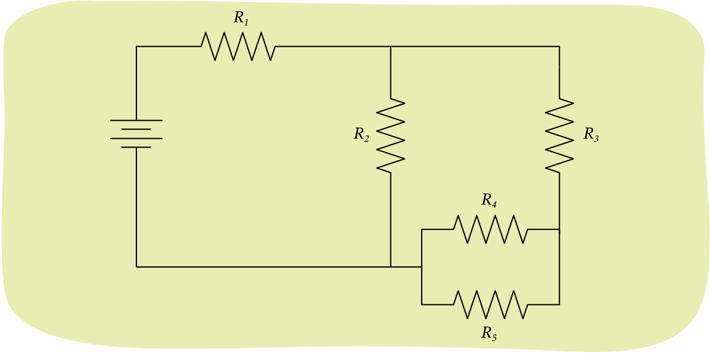
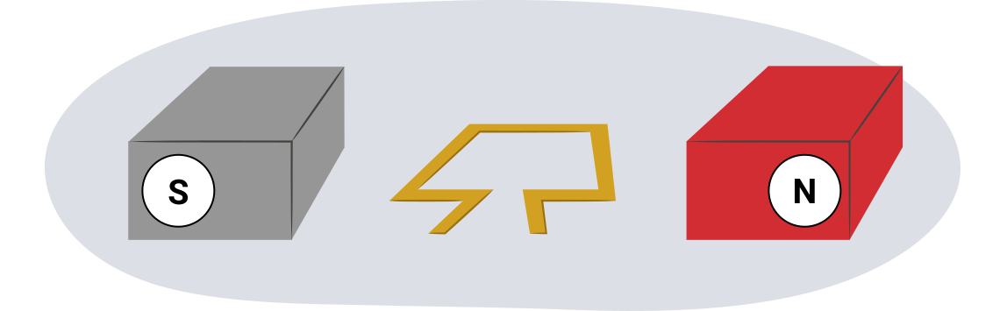
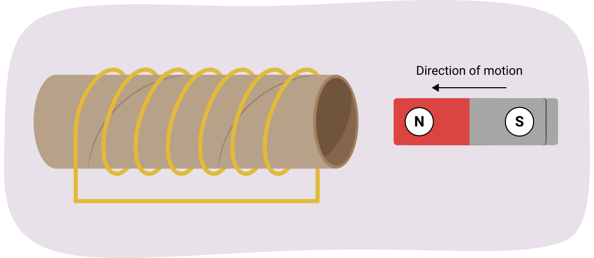

전지는 9.00V의 전위차를 제공합니다. 회로에 대해 다음 표를 완성하세요. 풀이에 GUESS 형식을 사용할 필요는 없지만, 모든 풀이 과정을 보여주고 과정을 설명해야 합니다. (10점)
| 구성 요소 | 전위차 | 전류 | 저항 |
|---|---|---|---|
| 저항기 1 (R1) | 4.00 V | 20.0 Ω | |
| 저항기 2 (R1) | 0.125 A | ||
| 저항기 3 (R1) | 48.0 Ω | ||
| 저항기 4 (R1) | 0.0050 A | ||
| 저항기 5 (R1) |


전기 초인종은 변압기를 사용하여 120V를 6.0V로 변환합니다. 1차 코일에 660개의 감은 수(turns)가 있습니다. 2차 코일에는 몇 개의 감은 수가 있으며, 이것은 승압 변압기(step-up transformer)인가요 아니면 강압 변압기(step-down transformer)인가요? (5점)
전력 회사의 엔지니어들이 4.08MW의 전력을 전달하는 500.0kV 송전선(power transmission line)을 분석하고 있습니다. 이 송전선의 길이는 16.5km입니다. 전력 회사는 전기를 9.0센트/kWh에 판매합니다. 다음 다섯 문제는 이 송전선에 관한 것입니다.
이전 창으로 돌아가려면 이 탭을 닫으세요.